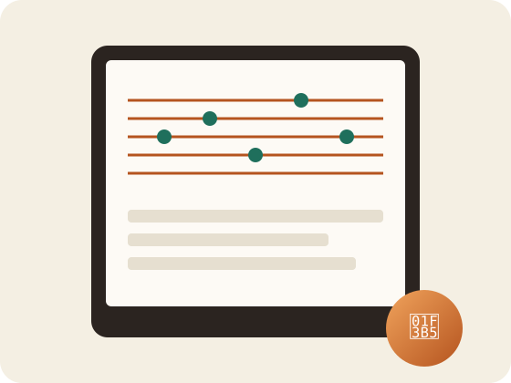
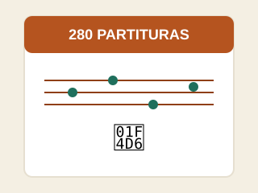
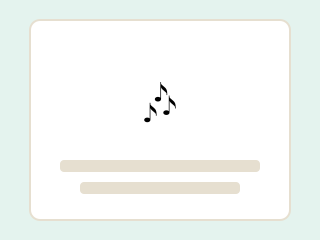
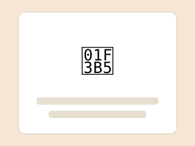
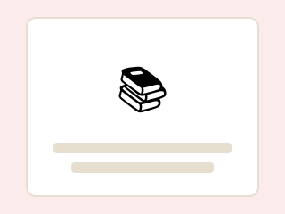

Repertório completo e variado
Mais de 280 partituras entre clássicos populares, música erudita, hinos e canções natalinas. Variedade de sobra para estudar, praticar ou se apresentar.
Um repertório completo e organizado em PDF para estudar, dar aulas ou se apresentar — sem perder mais tempo caçando músicas soltas pela internet.
✅ Acesso imediato · ✅ Pagamento único · ✅ 7 dias de garantia

Mais de 280 partituras entre clássicos populares, música erudita, hinos e canções natalinas. Variedade de sobra para estudar, praticar ou se apresentar.
Um único arquivo indexado por título, pronto para abrir no celular, tablet ou computador. Nada de procurar músicas avulsas em sites diferentes.
Nada de horas montando repertório ou garimpando partituras soltas: você baixa e já está tocando — ou ensinando — em minutos.
Ideal para quem está aprendendo e também para quem ensina: aulas particulares, prática em grupo, apresentações, escolas e igrejas.

Repertório completo e organizado, pronto para estudo, aulas e apresentações.

Melodias conhecidas de festas juninas, folclore e músicas regionais, do fácil ao intermediário.

Trechos de compositores conhecidos, hinos tradicionais e repertório de Natal completo.

Encontre qualquer música em segundos, em qualquer dispositivo.
Que querem ampliar o repertório com músicas prontas para praticar desde o primeiro dia.
Que precisam de material organizado para as aulas sem perder horas procurando partituras.
Que tocam em conjunto e precisam de arranjos acessíveis, variados e fáceis de compartilhar.
Que querem tocar por hobby em casa com um acervo completo em PDF, sem complicação.
⏰ A promoção de lançamento pode terminar a qualquer momento
Presentes inclusos na sua compra de hoje
Bônus 1
Todas as posições dos dedos, nota por nota, com diagramas simples de seguir.
De R$29 HOJE GRÁTIS
Bônus 2
Mini-guia passo a passo para quem nunca estudou música. Em poucos dias você já lê suas primeiras notas.
De R$35 HOJE GRÁTIS
Bônus 3
Rotina diária pronta: o que praticar em cada dia para evoluir rápido sem se frustrar.
De R$32 HOJE GRÁTIS
Bônus 4
Folhas pautadas prontas para imprimir e anotar seus próprios arranjos e exercícios.
De R$22 HOJE GRÁTIS
Bônus 5
Repertório de fim de ano pronto: igrejas, escolas e encontros em família.
De R$28 HOJE GRÁTIS
"Boa parte das famílias diz não saber por onde começar quando o filho chega da escola pedindo ajuda com a flauta doce. Esse repertório existe justamente para esse momento." — com base em pesquisas informais com nossa comunidade de compradores
Mães, avós, professores e adultos que voltaram à música — veja o que contam sobre a experiência
"Minha filha tinha tarefa de flauta e eu não fazia ideia de como ajudar. Com o Guia de Dedilhado entendi em uma tarde o que não entendi na infância inteira. Hoje praticamos juntas todas as noites."
"Achei que fosse mais um PDF genérico de internet. Quando abri e vi que cada nota tinha o nome escrito embaixo, entendi por que meu filho evoluiu tão rápido. Vale muito mais do que paguei."
"Comprei para tocar com meu neto nos fins de semana. Aos 63 anos achei que não conseguiria aprender mais nada. O Plano de 30 Dias me provou que eu estava enganada."
"Toquei flauta na escola e larguei de vez. Aos 36 anos voltei a tentar com esse material, e em duas semanas já tocava músicas que nem lembrava que sabia. Muito bom voltar."
"Uso essas partituras com meus alunos do fundamental há um mês. O sistema de nomes nas notas faz até os alunos com mais dificuldade acompanharem o ritmo da turma."
"Por menos de R$20 achei que seria material fraco. Me enganei redondamente: o nível de detalhe das 280 partituras parece de curso pago à parte. Já indiquei para todo o grupo da escola."
A promoção pode terminar a qualquer momento.
Valor total de tudo: R$196
DE R$59
Hoje você leva TUDO por apenas
R$19,90
Pagamento único · Sem mensalidades
⏰ Cada dia que passa é um dia a mais sem esse repertório em mãos. Leva menos de 2 minutos para começar.
💳 Cartão, Pix e boleto · Compra segura · Acesso imediato
Se em 7 dias você sentir que esse material não era o que esperava, é só nos escrever que devolvemos 100% do seu dinheiro. Sem perguntas, sem burocracia. Aprender música não deveria começar com uma decisão arriscada — por isso tiramos o risco da equação.
🔒 Compra protegida · Criptografia SSL · Suporte por e-mail
Assim que o pagamento é confirmado, você recebe o acesso por e-mail imediatamente. O download do PDF completo é instantâneo.
Sim! Com os bônus de dedilhado e leitura de partitura, dá para começar mesmo sem nunca ter tocado antes.
Sim, tudo está em PDF e abre em qualquer celular, tablet ou computador. Também dá para imprimir.
Pagamento único de R$19,90. Sem mensalidades, com acesso vitalício e atualizações gratuitas.
Para flauta doce soprano, a mais comum nas escolas e a usada pela maioria dos estudantes.
Você tem 7 dias de garantia total. É só pedir o reembolso e devolvemos tudo.
De R$59 por apenas R$19,90 hoje
Sim, quero minhas 280 partituras →